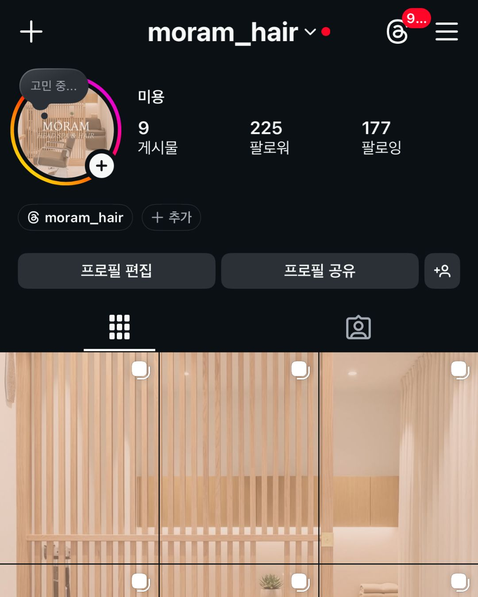
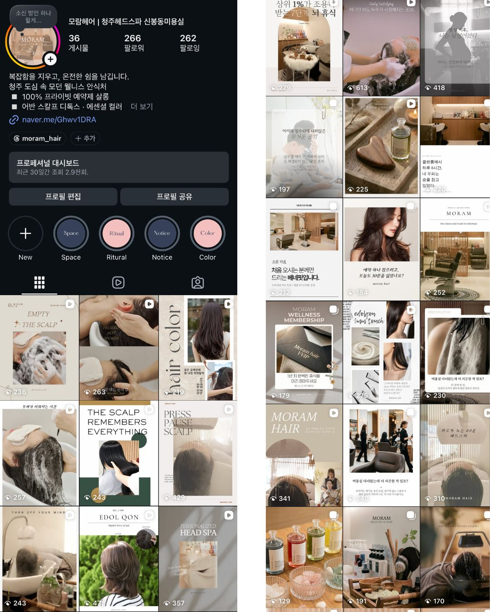
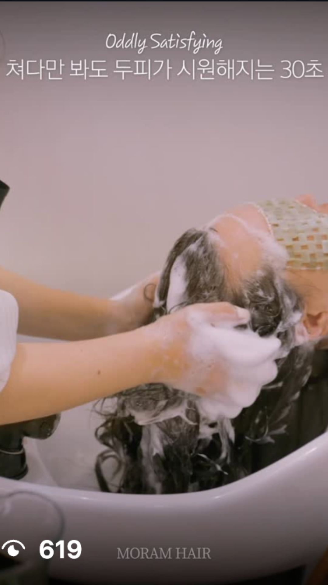
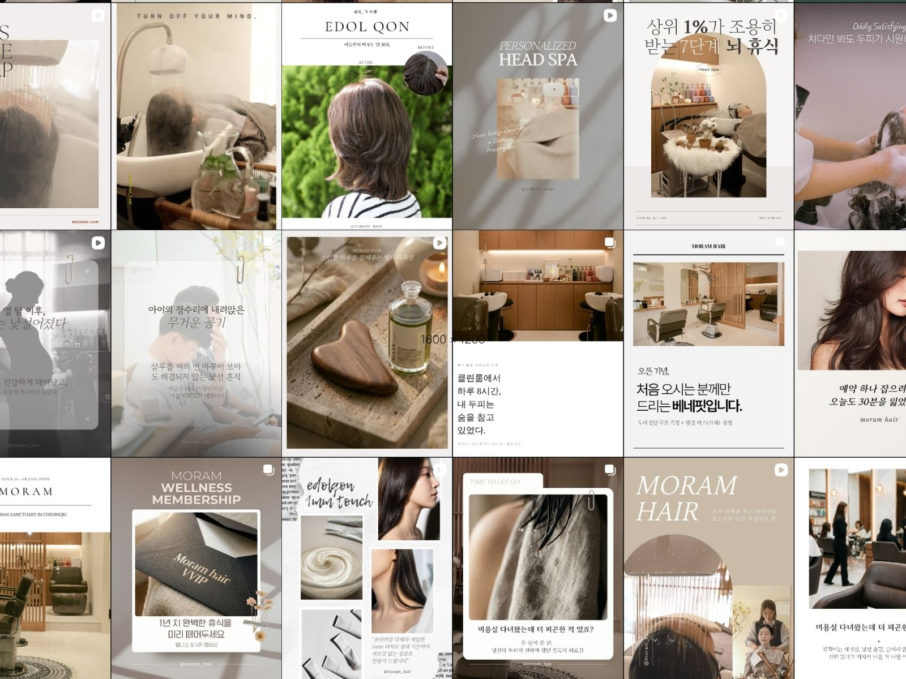
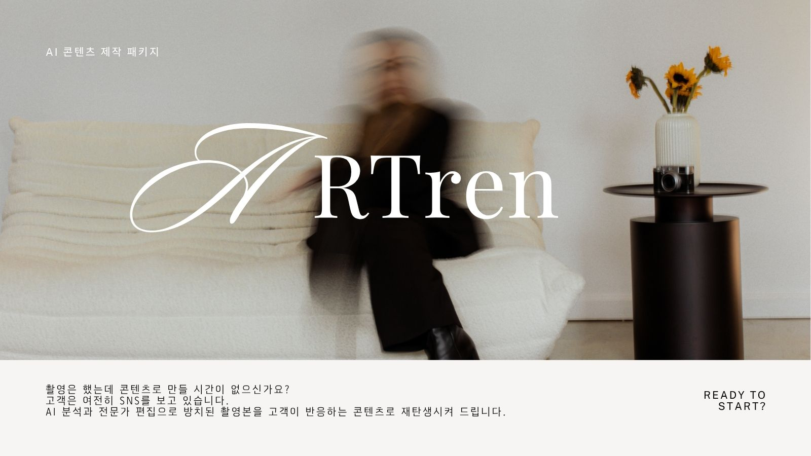

3개월 동안 모람헤어의 인스타그램 콘텐츠, 브랜드 톤앤매너, 고객 유입 동선, 콘텐츠 반응을 기반으로 정리한 최종 인사이트입니다. 이번 리포트는 단순 결과 보고가 아니라, 앞으로의 콘텐츠 운영 방향과 브랜드 성장 가능성을 함께 정리한 자료입니다.
업로드 횟수가 아니라, 브랜드가 기억되는 방식과 고객이 예약까지 이동하는 구조를 함께 설계한 3개월이었습니다.
업로드 중심 계정에서 브랜드 인식 중심 계정으로 전환. 프로필, 소개문, 하이라이트, 그리드 첫인상을 하나의 기준으로 정비했습니다.
시술, 공간, 디자이너, 고객 경험을 하나의 흐름으로 재정리. 릴스·카드뉴스·무드컷이 같은 브랜드 언어를 공유하도록 정렬했습니다.
콘텐츠를 본 고객이 프로필 → 네이버 플레이스 → 예약까지 이동할 수 있는 구조를 점검하고 각 접점의 문구를 재설계했습니다.
반응 데이터를 기준으로 반복 가능한 콘텐츠 카테고리를 정의하고, 다음 분기의 성장 방향과 우선순위를 정리했습니다.
모람헤어는 이미 시술력과 공간 완성도를 갖춘 브랜드였습니다. 다만 그 강점이 콘텐츠 안에서 하나의 구조로 정리되기 전이었고, 이는 곧 정리하는 순간 반응으로 이어질 수 있는 명확한 성장 가능성을 의미했습니다.
개별 콘텐츠의 완성도는 이미 높은 수준이었습니다. 여기에 피드 전체를 하나의 브랜드로 인지시키는 시각적 규칙을 더하면, 첫인상이 한층 선명해질 수 있는 상태였습니다.
시술 결과뿐 아니라, 그 결과를 만드는 과정과 판단 기준을 함께 보여줄 수 있는 확장 여지가 있었습니다. 과정이 드러나는 순간 신뢰의 밀도가 달라질 수 있는 지점이었습니다.
모람헤어를 선택해야 하는 이유가 콘텐츠 안에서 더 선명하게 정리될 여지가 있었습니다. 고객의 판단을 돕는 정보를 채울 자리가 충분히 열려 있었습니다.
인스타그램에서 네이버 플레이스와 예약으로 이어지는 흐름을 더 명확하게 연결할 수 있는 상태였습니다. 동선을 잇는 것만으로 기존 반응을 전환으로 회수할 수 있었습니다.

시술 결과와 개별 콘텐츠는 존재했지만, 피드 전체의 브랜드 톤과 예약 동선은 더 정리될 여지가 있었습니다.

시술, 공간, 디자이너 전문성, 고객 고민형 콘텐츠가 하나의 브랜드 톤으로 정리되었습니다.
세 개의 축을 병렬로 운영했습니다. 하나라도 빠지면 나머지가 성과로 회수되지 않는 구조입니다.
정리 → 반복 → 회수. 각 단계는 다음 단계의 전제 조건입니다.
월 1회 촬영 소스를 채널별로 재가공하여 누적 자산으로 전환했습니다.
두피 스케일링, 헤드스파 과정, 컬러 시술 등 과정 중심 숏폼. 논팔로워 유입의 핵심 채널로 작동했습니다.
고객 고민 해결형 정보 콘텐츠. 저장·공유가 발생하는 지점이자 상담 전 신뢰를 형성하는 자산입니다.
공간, 제품, 디테일 컷. 피드 전체의 톤을 고정하고 가격 저항을 낮추는 시각 자산입니다.
지역 키워드 기반 검색 유입 설계. 네이버 플레이스 유입과 직접 연결되는 접점입니다.
프로필 소개문, 링크 구조, 하이라이트 순서, 문의 채널 정비안을 제공했습니다.
월 단위 테마와 발행 캘린더를 문서화하여 반복 가능한 운영 기준으로 남겼습니다.

완성 결과보다 시술 과정과 손의 움직임을 보여준 콘텐츠가 고객의 체류와 관심을 만드는 핵심 포맷으로 작동했습니다.

월 1회 촬영 소스를 릴스, 카드뉴스, 무드컷, 블로그 콘텐츠로 재가공하여 하나의 브랜드 자산으로 축적했습니다.
관찰 → 의미 → 다음 운영 제안의 3단 구조로 정리했습니다.
완성 컷 단독 게시물보다, 스케일링·헤드스파 과정을 보여준 릴스의 조회수와 체류가 뚜렷하게 높았습니다.
고객은 결과의 아름다움보다, 그 결과에 도달하는 손과 절차의 정교함을 신뢰의 근거로 삼습니다.
모든 시술 콘텐츠에 최소 1개의 '과정 컷'을 필수 구성 요소로 고정합니다.
고민 해결형 카드뉴스에서 저장과 프로필 방문이 집중적으로 발생했습니다.
피드는 감상의 대상이 아니라 판단의 자료입니다. 자신의 문제와 연결되는 순간에만 계정으로 이동합니다.
콘텐츠 기획의 시작점을 '시술명'이 아니라 '고객의 증상'으로 전환합니다.
인물과 상담 맥락이 드러난 콘텐츠에서 문의 반응이 상대적으로 높게 형성되었습니다.
고객은 '살롱'을 예약하지 않고 '사람'을 예약합니다. 판단 기준을 가진 전문가가 보일 때 선택이 발생합니다.
디자이너의 시술 판단 기준과 추천 논리를 정기 시리즈로 구조화합니다.
무드컷 비중이 확보된 이후 피드 첫인상이 안정되었고, 프로필 방문이 상승 추세로 전환되었습니다.
가격은 숫자가 아니라 맥락 안에서 평가됩니다. 정돈된 공간감은 가격을 정당화하는 배경이 됩니다.
월별 무드컷 최소 발행 수량을 브랜드 운영 규칙으로 고정합니다.
릴스 유입 증가와 네이버 플레이스 유입, 예약 신청이 같은 구간에서 함께 상승했습니다.
도달은 목표가 아니라 통로입니다. 통로 끝에 예약 지점이 없으면 반응은 소실됩니다.
모든 콘텐츠에 다음 이동 지점을 1개씩 명시하는 CTA 규칙을 적용합니다.
인스타그램 인사이트(최근 90일) 및 네이버 스마트플레이스 월별 결산 데이터를 교차 분석한 수치입니다. 수집·확정되지 않은 항목은 임의로 채우지 않습니다.
| 지표 | 값 |
|---|---|
| 진행 기간 | 2026.04.06 – 2026.07.04 (90일) |
| 인스타그램 그리드 기준 발행 수 | 9개 |
| 전체 제작 자산 수 | 릴스 · 카드뉴스 · 무드컷 · 블로그 포함 별도 집계 |
| ㄴ 릴스 | 15편 |
| ㄴ 카드뉴스 | 12개 |
| ㄴ 무드컷 / 브랜드 이미지 | 15개 |
| ㄴ 블로그 / 검색형 콘텐츠 | 6편 |
| 총 도달 수 | 3,090전 분기 대비 +1,166.4% |
| 총 조회 수 | 11,229회논팔로워 유입 52.8% |
| 프로필 방문 | 630회전 분기 대비 +166.9% |
| 반응 수 | 488건 |
| 공유 수 | 25건 |
| 문의 반응 | 121건 (대시보드 총 반응수 기준) |
| 네이버 플레이스 유입 | 3,176회 (3개월 합산) |
| 예약 전환 | 161건 (3개월 예약 신청 완료 합산) |
| 가장 반응 좋았던 콘텐츠 | 5월 10일 릴스 · 두피 스케일링 테크닉 (조회 613회) |
| 개선이 필요한 콘텐츠 유형 | |
| 클라이언트 피드백 |
본 리포트의 정량 데이터는 실제 인스타그램 인사이트 및 채널 데이터를 기준으로 최종 입력됩니다.
모람헤어 3개월 운영은 단순 콘텐츠 제작이 아니라, 로컬 뷰티 브랜드가 어떻게 온라인에서 신뢰를 쌓고, 고객의 예약 판단을 돕는 콘텐츠 구조를 만들 수 있는지 보여주는 사례입니다.
월 1회 촬영으로 릴스·카드뉴스·무드컷·블로그·광고 소재를 동시에 확보합니다. 제작 단가가 아니라 자산 회전율의 문제입니다.
개별 콘텐츠의 완성도가 아니라 계정 전체의 인상이 신뢰를 만듭니다. 톤을 정렬하는 순간 브랜드가 보이기 시작합니다.
저장과 문의는 감탄이 아니라 공감에서 발생합니다. 증상에서 출발한 콘텐츠가 예약 판단을 앞당깁니다.
유입과 전환은 별개의 작업이 아닙니다. 프로필·플레이스·예약 링크를 하나의 동선으로 설계합니다.
운영의 결과물은 콘텐츠가 아니라 다음 분기의 기준입니다. 데이터로 검증된 카테고리만 반복합니다.
콘텐츠를 꾸준히 올려도 문의가 없다면, 문제는 업로드 횟수가 아닙니다.
ARTren 패키지 보기3개월 동안 브랜드 톤, 콘텐츠 방향, 고객 반응 데이터를 확인했다면 다음 단계는 반드시 같은 운영비를 유지하는 것이 아닙니다. 모람헤어처럼 촬영은 직접 가능하지만 편집, 카드뉴스 제작, 릴스 구성, 브랜드 무드 정리가 어려운 경우에는 AI 콘텐츠 제작 패키지로 전환해 더 가볍게 운영을 이어갈 수 있습니다.
촬영, 기획, 업로드, 네이버 플레이스, 콘텐츠 전략까지 계속 맡기고 싶은 경우
촬영은 직접 가능하지만, 촬영본을 릴스와 카드뉴스로 만드는 시간이 부족한 경우

촬영은 직접, 콘텐츠 제작은 ARTren이 담당하는 전환형 패키지입니다.
이번 3개월은 모람헤어의 콘텐츠를 단순히 더 많이 올리는 기간이 아니라, 브랜드가 어떤 방식으로 기억되고, 어떤 콘텐츠가 고객의 예약 판단을 돕는지 확인하는 과정이었습니다. 앞으로는 이 기준을 바탕으로 더 정교한 콘텐츠 운영, 검색 유입, 예약 전환 구조를 만들어갈 수 있습니다.